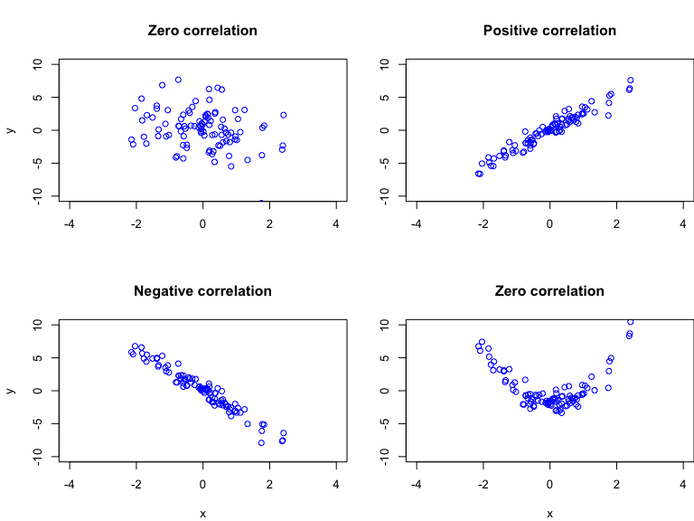

Based on Stock and Watson, ch. 3
Most interesting empirical questions relate to the relationship between random variables
Education and earnings
Class size and student outcomes
The FTSE index and commodity prices
Need tools to describe the sample relationship between random variables
Scatterplots
Sample covariance
library(AER) # Load AER library
data(CASchools) # Load CASchools dataframe from AER library
# Add student-teacher (STR) ratio and testscore (Score) to CASchools
CASchools$STR <- CASchools$students/CASchools$teachers
CASchools$Score <- (CASchools$read + CASchools$math)/2
# Scatter plot
plot(CASchools$STR,CASchools$Score,
main = "Student-teacher ratio and test scores",
xlab = "Student-teacher ratio",
ylab = "Test score") Useful tool for describing relationships in the data, including nonlinear relationships
Conveys the range of observations in the data
Treats variables symmetrically; silent about causality
Applicable to bivariate relationships
The population is the entire pool from which a statistical sample is drawn (people, firms, objects, etc.)
The sample is a subset of the population
Statistics (and econometrics) deals with what we can learn about the population from a sample
Suppose we are interested in the random variable \(Y\) with population distribution \(f_Y(y)\)
Sample population at random \(n\) times; each population-member is equally likely to be included:
\[\{Y_i; i=1,...,n\}\]
Random sampling means it is appropriate to treat the sample as a collection of \(n\) random variables
Simple random sampling produces an independently and identically distributed (i.i.d.) sample
\[f_{Y_i}(y) = f_Y(y)\]
The population average of \(Y\) is
\[\mu_{Y} = \mathrm{E}(Y) = \int y f_Y(y)dy,\]
The sample average is an estimator of \(\mu_{Y}\)
\[\overline{Y} = \frac{1}{n} \sum_{i=1}^n Y_i\]
## [1] 19.64043The population variance of \(Y\) is
\[\sigma^2_{Y} = \mathrm{var}(Y) = \mathrm{E}[(Y - \mu_Y)^2]\]
The sample variance is an estimator of \(\sigma^2_{Y}\):
\[s^2_{Y} = \frac{1}{n-1} \sum_{i=1}^n (Y_i - \overline{Y})^2\]
Standard deviations are \(\sigma_{Y} = \sqrt{\sigma^2_{Y}}\) and \(s_{Y} = \sqrt{s^2_{Y}}\)
# Sample variance and s.d. of student-teacher ratio
s2_STR <- var(CASchools$STR) # Sample variance of STR
s2_STR## [1] 3.578952## [1] 1.891812The population covariance between two random variables \(X\) and \(Y\) is
\[\sigma_{XY} = \mathrm{E}[(X-\mu_X)(Y-\mu_Y)]\]
The sample covariance is an estimator of \(\sigma_{XY}\):
\[s_{XY} = \frac{1}{n-1} \sum_{i=1}^n (X_i - \overline{X})(Y_i - \overline{Y})\]
The population correlation between \(X\) and \(Y\) is
\[\rho_{XY} = \frac{\sigma_{XY}}{\sigma_X \sigma_Y}\]
The sample correlation is an estimator of \(\rho_{XY}\), replacing population quantities w/ analogous sample quantities:
\[r_{XY} = \frac{s_{XY}}{s_X s_Y}\]
## [1] -8.159323# Sample correlation b/w STR and Score
r_STR_Score <- cor(CASchools$STR,CASchools$Score)
r_STR_Score## [1] -0.2263627The estimators \(\overline{Y}\), \(s^2_Y\), and \(s_{XY}\) are consistent estimators of the population parameters \(\mu_Y\), \(\sigma_Y^2\), and \(\sigma_{XY}\)
\[\overline{Y} \overset{p}{\rightarrow} \mu_Y; \quad s^2_Y \overset{p}{\rightarrow} \sigma_Y^2; \quad s_{XY} \overset{p}{\rightarrow} \sigma_{XY}\]
There is a high probability that \(\overline{Y}\), \(s^2_Y\), and \(s_{XY}\) are close to \(\mu_Y\), \(\sigma_Y^2\), and \(\sigma_{XY}\), respectively, in large samples

Concise record of the relationship between two random variables \(X\) and \(Y\)
Measures the strength of the linear relationship between two random variables \(X\) and \(Y\)
Covariance and correlation treat \(X\) and \(Y\) symmetrically: correlation does not imply causation
Scatterplots and sample correlations illustrate relationship b/w two random variables
Scatterplots capture nonlinearities, but do not provide quantitative summary
Sample correlations provide quantitative summary, but measures only linear relationship
Scatterplot relations or correlations does not imply causality